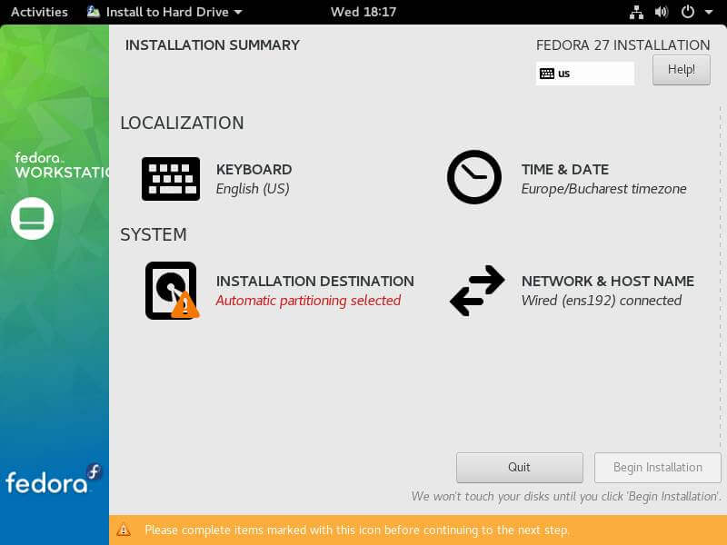

Building Linux: Gentoo VM
Embedded & Operating Systems 7
Deze les
- Werkcollege!
- Huiswerkopdracht 3: Gentoo
Gentoo vs. Fedora
 
Gentoo Installeren
- Command Line
- Download / Boot ISO
- Partitioneren
- Basisstructuur aanbrengen
- Configuratie
- Chroot
- Kernel compileren
- Aanvullende software